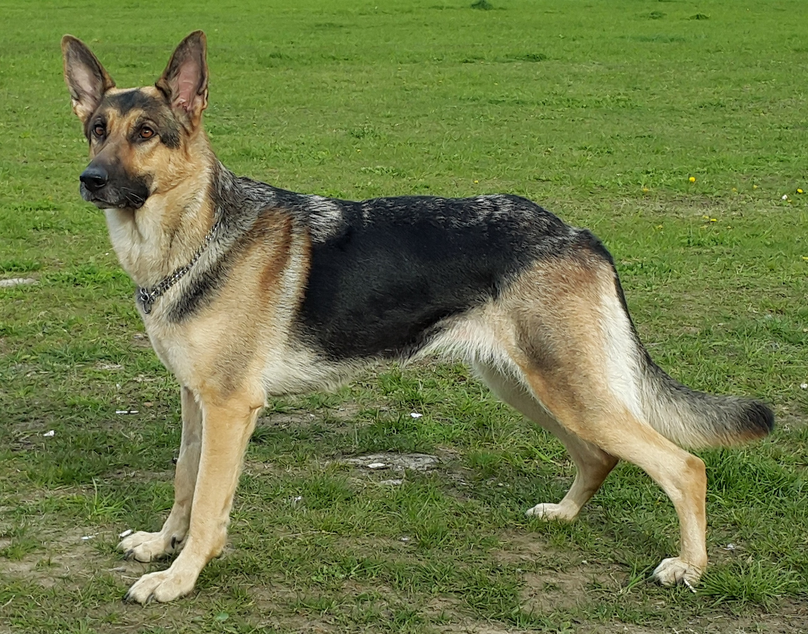
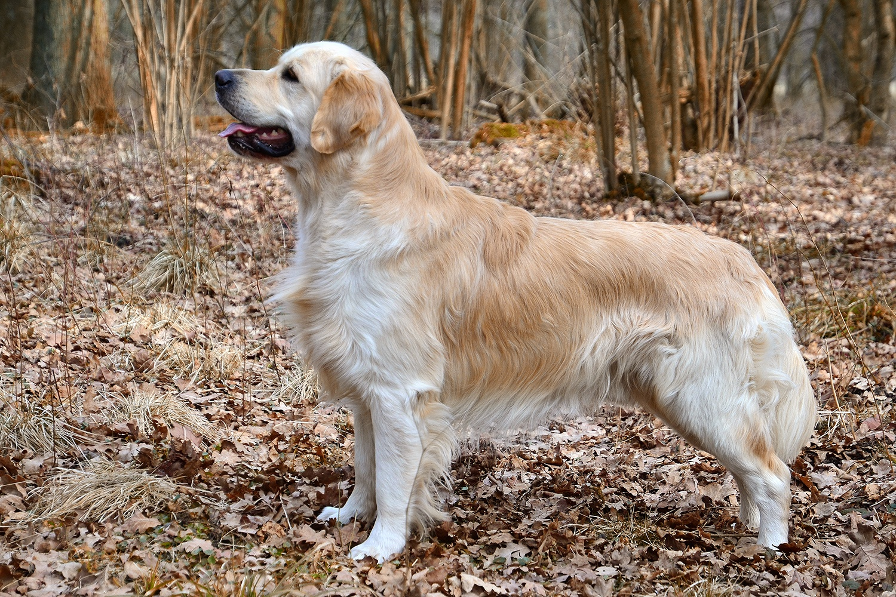

Landing Page
Welcome to Dog Breeds Ranking List!

Hello there! This is a webpage that shows the current ranking of dog breeds
as of September, 2019.
If you have any questions, please place your answers
in the form below. Also, if you have time, please fill it out as well. I would
like to know more about you!
Informational Page
Rank #1: Labrador Retriever

The Labrador Retriever is a large dog breed of retriever-gun dog.
It is one of the most
popular dog breeds in Canada, the United Kingdom and the United States.
Weight: Male: 64–79 lbs (29–36 kg), Female: 55–71 lbs (25–32 kg)
Colors: Black, Chocolate, Yellow
Height: Male: 22–24 inches (57–62 cm), Female: 22–24 inches (55–60 cm)
Temperament: Intelligent, Even Tempered, Kind, Agile, Outgoing, Trusting, Gentle
Rank #2 German Shepherd

The German Shepherd is a breed of medium to large-sized working dog that originated in Germany.
In the English language, the breed's officially recognized name is German Shepherd Dog.
Weight: Male: 66–88 lbs (30–40 kg), Female: 49–71 lbs (22–32 kg)
Colors: Black, Black & Tan, Red & Black, Sable, Grey, Black & Silver
Height: Male: 24–26 inches (60–65 cm), Female: 22–24 inches (55–60 cm)
Temperament: Intelligent, Obedient, Loyal, Alert, Confident, Curious, Watchful, Courageous
Rank #3 Golden Retriever

The Golden Retriever is a large-sized gun dog that retrieves shot waterfowl, such as ducks and upland game birds,
during hunting and shooting parties.
The name "retriever" refers to the breed's ability to retrieve shot
game undamaged due to their soft mouth.
Weight: Male: 65–75 lbs (30–34 kg), Female: 55–71 lbs (25–32 kg)
Colors: Dark Golden, Cream, Light Golden, Golden
Height: Male: 22–24 inches (56–61 cm), Female: 20–22 inches (51–56 cm)
Temperament: Reliable, Intelligent, Kind, Trustworthy, Confident, Friendly